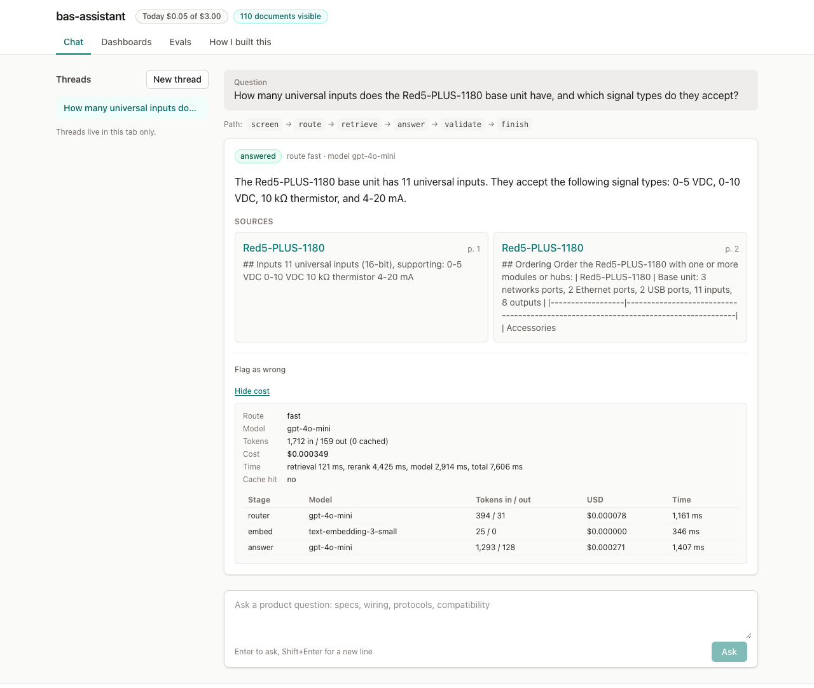

What It Is
A support assistant for the support and sales staff of a building-automation company: it answers product questions only from public documentation, shows the page each answer came from, and declines when the documents do not cover the question.
Try the live demo · Read the code on GitHub

BAS stands for building automation system: the controls that run heating, cooling, and ventilation in large buildings. The questions are the ones a support desk gets about those products: specs, ordering, wiring, protocols, and compatibility.
The documents are Delta Controls' public catalog sheets and product pages. This is an independent demo built on that public documentation. It is not a Delta Controls product, and I am not affiliated with Delta Controls.
The Problem
A language model will answer a product question fluently whether or not it has the facts.
In support that is the dangerous case. A wrong input count or a wrong wiring detail that sounds right gets passed to a customer, and it is hard to catch because it reads like an answer.
I wanted the opposite trade: every answer points at the page it came from, and declining is the normal result when the documents are silent.
How It Works
The assistant never answers from memory. It searches the documents first, and the model may only write from what the search found.
Code decides whether there is enough evidence to answer, and code checks the answer before anyone sees it.
- 01Read the documents. 112 public documents (70 PDFs and 42 product pages) are split by page and then by heading, so every piece of text keeps its page number. Two of them are restricted to test access rules, so the public demo searches 110.
- 02Clean the question. Names, emails, phone numbers, and addresses are removed before anything is stored or sent to a model. Attempts to change the assistant's instructions and off-topic questions are refused.
- 03Search two ways. One search matches by meaning and one by keyword, both inside the same Postgres database. The two result lists are merged, and a small local model re-scores the top 20 against the question.
- 04Decline if the evidence is weak. If the best match scores under a fixed threshold, the assistant says it could not find the answer, and the answer model is never called.
- 05Answer from five sections. The answer model reads the five best sections and must name the ones it used. Simple questions go to a small model and complex ones to a larger one.
- 06Check the answer in code. A citation the model was not given, a link that is not a source, or an image fails the check. The model gets one retry, then the assistant returns a fixed message instead of the answer.
- 07Show the sources. The source cards are built from the stored text, not from what the model wrote. Each card shows the document and the page, and a link to a PDF opens it at that page.
It runs as a set of Docker containers on one DigitalOcean droplet with two CPUs. LangGraph runs the steps above, Postgres with pgvector holds the documents, and Caddy serves it over HTTPS.
PYTHON + FASTAPI · POSTGRESQL + PGVECTOR · LANGGRAPH · LITELLM PROXY (GPT-4O-MINI, CLAUDE SONNET 4.6) · REDIS · REACT + TYPESCRIPT · PROMETHEUS + GRAFANA · DOCKER COMPOSE + CADDY · DIGITALOCEAN DROPLET
How I Know It Works
I keep a set of 20 questions with the right answer written down ahead of time, and I measure the live site against it. These numbers are from one run against the live demo on September 27, 2026.
- Fixed question set: 22 of 22 checks passed. Of those, 17 had to be answered citing the expected document and 5 had to be declined: 3 the documents do not cover and 2 about restricted documents. The 20 questions make 22 checks because those 2 are asked twice, once with access and once without.
- A pass means the right decision and the right document. It does not check the page number or the wording, so the answers are also scored.
- Answer quality on the 17 answered questions, scored by the open-source RAGAS library with a second model as judge: faithfulness 0.734, answer relevancy 0.903, context precision 0.825, context recall 1.000. Faithfulness is the share of an answer's claims that the retrieved text supports.
- Weakest area: protocol questions score 0.111 on faithfulness. Sibling products share sections word for word, and the judge reads those sections without the product name that the answer model sees. Part of that number is a measurement problem and part is real.
- Adversarial tests: 6 of 6 passed, including a direct attempt to override the instructions, instructions planted inside a document, and personal data in a question.
- Lint, type checks, and unit tests run on every pull request. The evaluations call live models, so I run them by hand against the live site.
These are small numbers and I treat them that way. The judge is a small model, each category has two or three questions, and the decline threshold was tuned on the same 22 checks. So 22 of 22 shows the system does what I designed it to do on questions I chose. It does not show how it does on questions I did not think of.
What It Costs Per Question
Every model call is logged with its usage and its cost in dollars, and the demo shows that receipt under each answer. These figures come from the same run.
- A simple question, answered by the small model: $0.00031 median over 16 answers.
- A complex question, answered by the larger model: $0.0089 median over 3 answers, which is just under one cent.
- A declined question: $0.00007 to $0.00008, because the answer model is never called.
- An identical question that was already answered: $0, served from a cache.
- The whole evaluation run, answers and judging together: $0.053.
The demo has a hard spending cap of $3 a day. When it is reached the assistant stops answering until midnight UTC, and the Budget dashboard in the demo shows where the money went.
What I Would Build Next
- Fix the protocol answers. Sibling products have near-identical sections that crowd the five the model reads. Removing the duplicates is the next thing to try.
- Make it faster. The median answer takes 6.0 seconds and 95% arrive within 9.5 seconds. The re-scoring step alone takes a median of 2.9 seconds on the server's two CPUs, and I have not load tested it.
- Measure live answers. The scores above come from a fixed set. Sampling real answers for faithfulness is not built yet.
- Widen and refresh the documents. The demo covers catalog sheets and product pages only, with no manuals, and re-indexing is a manual command that should run on a schedule.
- Put it where the questions are asked. Slack is the first channel I would add.